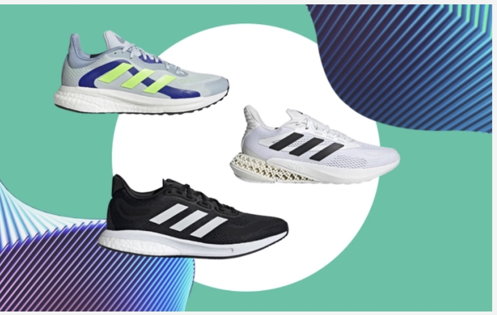
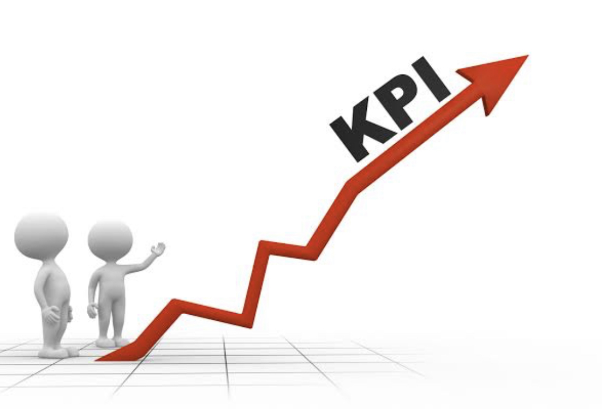

I analyzed Covid 19 dataset using SQL
I used order by, aggregate and group by functions to find countries that were most affected by the virus
and percentage of people per population that succumbed
I used Temp table and CTEs to find the number of vaccinated people per population

Tableau visualization of Data science job titles and salaries
I used tableau visualizations to demonstrate how factors such as experience level, mode of work and job title
affected data science job salaries
I have demonstrated how Since COVID 19 pandemic there was a steep increase in remote jobs.

Bike sales Excel Dashboard
Through pivot tables and Dashboards, I have demonstrated how customer salary and age affected their buying power
I have demonstrated how customer's commute distance affected their decision to purchase bike.

Adidas US interactive Sales Excel Dashboard
I have demonstrated using pivot tables and Dashboard the visualization of Adidas comapny Sales
The Dashboard shows how the selling method, the region and sales retailer affected the sales of the shoes.
Customer analysis using Tableau
The Tableau visualization shows how the revenue of the customer is affected by various factors
such as Age, Month, State, type of Product, Region and quantity and discount.

Sales and Employee performance analysis using sql
I analyzed average sales and average sales of all the stores using Joins, Subqueries and WITH function
.